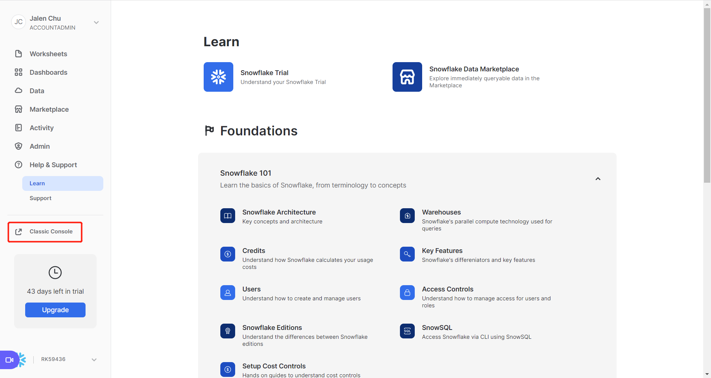
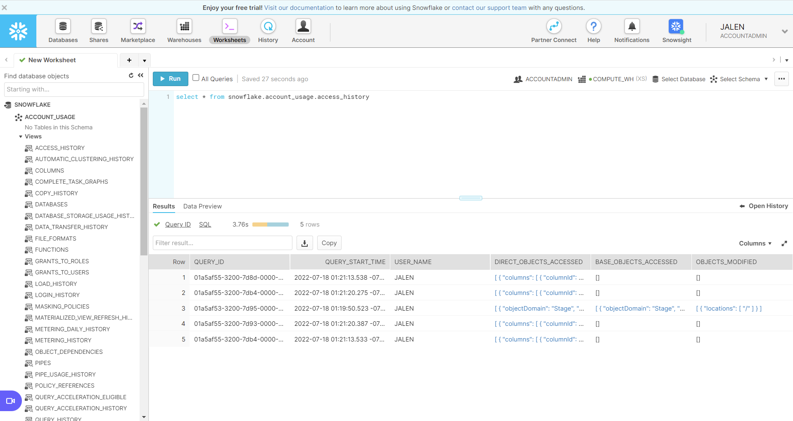

# 简介
snowflake 是一家搞云计算仓库的公司，我们这里使用的 snowflake 类似于一个数据仓库，或者类似于一个 database，一种网络 db，不是 twitter 的 snowflake 算法。
申请（30 天试用期）：https://signup.snowflake.com/
登录：https://app.snowflake.com/learn
点击左侧菜单中 Classic Console 进入 worksheet:

我的会跳转到:

简单查询：
select * from snowflake.account_usage.access_history | |
create or replace database jalen; -- 默认产生一个名字叫 public 的 schema | |
select current_database(), current_schema(); | |
create or replace table jalen_table ( | |
first_name string , | |
last_name string , | |
email string , | |
streetaddress string , | |
city string , | |
start_date date | |
); | |
insert into jalen_table values | |
('Clementine','Adamou','cadamou@sf_tuts.com','10510 Sachs Road','Klenak','2017-9-22') , | |
('Marlowe','De Anesy','madamouc@sf_tuts.co.uk','36768 Northfield Plaza','Fangshan','2017-1-26'); | |
select * from jalen_table; | |
select email from jalen_table where email like '%.uk'; | |
select first_name, last_name, dateadd('day',90,start_date) from jalen_table where start_date <= '2017-09-23'; | |
create or replace warehouse jalen_warehouse with | |
warehouse_size='X-SMALL' | |
auto_suspend = 180 | |
auto_resume = true | |
initially_suspended=true; | |
select current_warehouse(); | |
drop database if exists jalen; | |
drop warehouse if exists jalen_warehouse; |
# 连接
if __name__ == '__main__': | |
import snowflake.connector | |
ctx = snowflake.connector.connect( | |
user='xxxxxx', | |
password='xxxxxxxx', | |
account='xxx' | |
) | |
cs = ctx.cursor() | |
try: | |
cs.execute("SELECT current_version()") | |
one_row = cs.fetchone() | |
print(one_row[0]) | |
finally: | |
cs.close() | |
ctx.close() | |
print('End!') |
# 参考
https://docs.snowflake.com/en/
https://docs.snowflake.com/en/user-guide/python-connector.html
https://docs.snowflake.com/en/user-guide/python-connector-install.html
https://docs.snowflake.com/en/user-guide/admin-account-identifier.html
https://docs.snowflake.com/en/user-guide/admin-account-identifier.html#where-are-account-identifiers-used